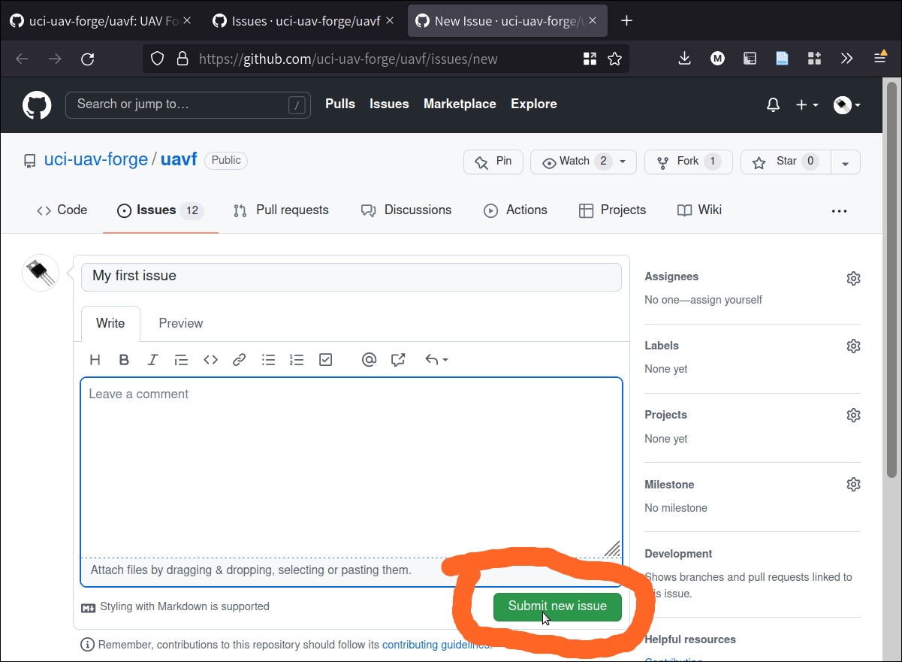

Contributing
This page is a guide to making contributions to the codebase.
Note
If you are not familair with using git to make contributions to an existing codebase, you should follow How to make a Contribution, and then practice making a contribution by following this page Practice Making a Contribution: Add Yourself to this List!.
Install uavfpy for development
From the root of this repository, run:
pip install -e .
This runs installation using setup.cfg from the root of the repository. The -e flag given to pip puts symlinks to the uavfpy package into your python environment, which will allow you to make changes to the local codebase and have them immediately available to the PYTHONPATH.
Doing it this way confers a number of benefits:
Dependencies will automatically be installed
Tests can be run on the local codebase
If something is broken with the install, you will know
This is the “right” way to develop a python package
If you have installed uavfpy this way, running
pip list
will yield
...
typing-extensions 4.2.0
uavfpy 0.1.0 /home/ms/prg/uavf/src
Unidecode 1.3.4
...
Here, typing-extensions is a library we downloaded from the internet, whereas uavfpy is a local package we have installed. If we make changes in the directory /home/ms/prg/uavf/src, they will be reflected immediately.
Even if we import uavfpy from some other directory, those changes are still reflected.
Workflow
Useful to Know
The development workflow presumes some working knowledge of git. If you are brand new to git, you may have these questions:
What is git? Branches, merging, commits? How do I install git? → Read the git-scm guide
What is GitHub? What are issues and pull requests? → Read the github flow guide
How to make a Contribution
We are trying to make it so that adding contributions to the UAV Forge codebase is as easy as possible. We are also trying to use development tools that are in place across industry and academia. So: follow this guide! It’s easy and well worth it.
To start, you have an idea for a new feature, or you discover a bug that needs to be fixed.
Create a new issue. To do this, click on “issues” tab, and then go to “new issue.” You can also review existing issues here.

On the issues tag, go to “New issue”:

Write as much detail about your issue as you can. Remember that things you post in issues are public, so they will help other developers understand what you are working on or what bugs you have encountered.
When you’re ready to post the issue, click “Submit new issue.”
{kind=link}
I submitted the issue and it was assigned #27. You can view it on Github:
When your issue has been created, it becomes a new “board” where you can post discussion about the issue: your progress on solving it or implementation, implementation details or questions, and so on. You can tag other users with “@” to call attention to some part of the issue.
Often, you will make multiple commits on a feature branch. When making your commits, add the number of the issue in the commit message with a hastag.
In this example, I might make a commit referencing the issue:
git commit -m "#27 Added images to contribution section"
Adding issue tags into commits helps link specific issues to specific commits, which helps other developers better understand how changes in the codebase are being made. I am going to commit some of the images I am adding to the branch, and tag them with the issue number I created here – you can see that the commit I made showed up on the issue page!
Linking commits to issues is especially helpful, because if you click on the commit, you can exactly reproduce the state of the code from that commit. This helps other developers work collaboratively on the issue.
Let’s make that commit…
Now that the commit is in, I can see the precise state of the code by clicking on the commit from in the issues page (If you’re lazy to go there, click here). This paragraph is not visible – because when I made the commit I hadn’t written it yet!
You can also link to commits easily by copying either a direct web link to the commit or a hash of the commit. In this case, the hash is:
64bfa36d02d6b5867dcc67d6ab2b701a06f24dc9
If I put that into a comment on the issue, I can link to the commit. This is the case for any commit in the codebase, even those outside of this particular issue. Feel free to try this out in issue #27.

Now, we have made our issue. When we start working on it, we want to create a branch from the repository. Typically, we want to branch from dev, rather than main. dev is the “working” branch of the codebase, and main is the “production” branch. Changes are usually made and integrated in the dev branch, and then when they really are ready, they go to main.
We can create branches manually with git. It’s a good idea to name branches with 1-3 summary words. It’s also good practice to preface the branch with the issue number.
Github also includes a handy function to make branches from issues directly. They can then be pulled into the local repository:

If you use Github’s functionality to do this, remember to branch from dev and not main.
Then, we work on the issue.
Warning
Remember to commit only code to the repository! For guidelines, see What should go into the repository?.
When we are satisfied that our issue is completed, we submit a Pull Request. In essence, what we are doing is asking to merge our branch back into dev so that it can be integrated with the project.
On most open-source projects, only core maintainers can accept a pull request (sometimes abbreviated PR). It’s not uncommon for pull requests to recieve lots of back-and-forth talk between core maintainers and contributors before they are accepted, and sometimes they are denied outright. Usually, though, pull requests are much appreciated!
To make a pull request go back to the main screen and click “Pull requests”:

When we are on the PR tab, we are going to click on “Create pull request”:

The “New pull request” button pulls up a page where we can request that any two branches in the project be merged together. Remember: a PR is just a request, it does not actually merge the branches!
Note
Even if it does not have a relevant issue, a branch can still be merged via this pull request process, as long as it is pushed to the remote.
The pull request shows us a summary of the changes that we are requesting to be merged. For example, when I created this branch, I ended up changing some wording in the “Useful to Know” section, and I can see it in the PR page:

Git is quite intelligent and uses diff to show which changes have been made across the entire branch.
Note
Along with file size issues, this is why we don’t put datasets into the repository, because they “clutter” the diff history between commits. If we add 10,000 images and submit a pull request, this page will have 10,000 images in it!
Now, we can click “Create pull request.”
We click “Create Pull Request” again. Once we create the PR, we now have an “active” PR. This does not mean that things have been merged yet – just that we are talking about doing so!
This opens another discussion page, where we can discuss the changes we are requesting to be merged. On pieces of software that recieve many PRs (codebases that are being worked on by many developers simultaneously) a PR page might be a worthwhile place to discuss the specific changes being made.
We don’t have very many developers, so it’s OK to submit blank PRs. If you name branches starting with the issue number, the PR page will automatically link back to the issue page. Very helpful!

You will see that the PR page has a “Merge pull request” button. This is where we will actually merge the PR.
Warning
Just because there are no direct conflicts between branches, does not mean that the PR is ready to be merged! Ideally, every PR has been reviewed and tested by a core maintainer. If you are not sure, DO NOT merge!
If you have conflicts, you will need to resolve them before merging.
When a PR has been merged, the branch that was used to make the PR can safely be deleted (unless it’s the ROS or dev branch – those are usually kept open). This will not delete any files, or even file history, because files are edited in the repository based on commits, NOT based on branches. So long as the commits are merged, the files and their entire history are preserved.
Once the PR has been merged, you can go back to the issues page – if you linked the pull request to the issue by following this guide, you will see a purple “Merged” button in the issue history.

Sometimes, an issue is small and will be resolved with just one branch and PR. In other cases, an issue (maybe a very complex feature, or tricky bug) may only be resolved by multiple branch/PR cycles.
Note
Branches and PRs can be made on any branch, not just dev. So I may create a 159-complex-feature branch, and then make a 160-complex-feature-bug branch from the 159-complex-feature branch. I would follow this guide the same way, merging 159 and 160 at the end with a PR. This could happen several times on a given branch. This is why version control is so powerful and why so many large software projects use it.
That’s it!
Summary
Here, I:
Created a new issue
Created a branch based on that issue
Worked on the issue in my branch
Made commits and linked the issue to those commits
Proposed to merge my branch back once I was done with a PR
Merged the PR, deleted the branch, and closed the issue.
Once you are ready, you can practice this process by adding your name to Developers section of this documentation. You are welcome to make a new issue to practice – or you can do only the latter half of the guide (everything minus creating a new issue) by making a new branch, making commits, and adding a PR. For this practice issue, branch off of main directly, since docs are rebuilt when new commits are merged into main.
What should go into the repository?
Code (
.py)Scripts (
.py,.sh)documentation (
.rst,.md)
Warning
What should not go into the repository?
Models (
.tflite,.pb, etc.)Data (
.tfrecord,.jpg, etc.)Example Files (
.jpg,.mp4, etc.)Scripts that don’t work
Failed Experiments
Rather than dumping non-code files into the repository, instruct the user how to acquire them. A good way to do this is to put the file in a publically-accessible link and include a script to download it. For example, I can upload a model to https://drive.google.com/some-public-link, and then make a script called download-model.sh that has
wget https://drive.google.com/some-public-link
Somewhere inside.
We want to do this for any file that isn’t code, like binary files, images, models, and so on. This ensures that the repository is as clean and readable as possible, which helps new maintaners understand the codebase.
Software Structure
ROS
Working with ROS has some requirements that make it somewhat more difficult to work with than you may be used to. In particular, using ROS requires a Linux operating system. We have a few laptops with linux installed already, but we expect that most people aren’t using linux natively and may not be used to working with the OS. So rather than making the entire piece of software dependent on linux to even run, we have separated the ROS-dependent code and the standard main code.
We also keep ROS code separate because it’s good practice to do so anyway. This is for several reasons, but it mostly has to do with how ROS is integrated with Python. In a nutshell, ROS always needs to use the system Python; even though standard Python development usually uses virtual environments to manage dependencies:

So, to avoid development hell, we put the bulk of the functionality into the main branch, install main package (and all of its dependencies) onto the vehicle’s system python, and then we can just import the :py:package:`uavfpy` package and use its functionality in our ROS scripts.
The Golden Rule of ROS Development
So we have a golden rule about ROS development:
⚠️⚠️⚠️ ENCAPSULATE ⚠️⚠️⚠️
Always Always Always Encapsulate!
What do we mean?
An Example of What Not To Do
Let’s say I want to add some feature to the imaging pipeline. It’s something simple: it just reports the number of pixels in the image. I want to publish this data to a special ROS topic, so I’ll do something easy, just put the function into the ros node:
import rospy
from std_msgs.msg import Int32
import numpy as np
...
def count_pixels(image):
return np.sum(image)
...
def publish_pixels(image):
pixels = count_pixels(image)
rospy.loginfo(pixels)
pub.publish(pixels)
...
def main():
...
rospy.init_node('pixels_counter')
pub = rospy.Publisher('pixels', Int32, queue_size=1)
rospy.Subscriber('image', Image, publish_pixels)
rospy.spin()
Great! Let’s just push to the ROS branch and commit. Sounds good, right?
⚠️⚠️⚠️ DO NOT DO THIS! ⚠️⚠️⚠️
Why not?
Nobody can run, debug, or test this code if they don’t have access to a ROS system.
These changes will not be included in
main, so documentation will not be automatically generated for this methodSomeone working on
mainmight never see this piece of code, so they might write their owncount_pixelsfunctionSomeone running
pyteston themainbranch will not be able to run the tests for this piece of code (if they are written)
Do This Instead
Put this method somewhere in main. Let’s say in pipeline:
...
class Pipeline(object):
...
def count_pixels(self, image):
"""Count the pixels of an image"""
return np.sum(image)
Then, call it from the piece of code in the ROS branch.:
from uavfpy.Pipeline import pipeline
def publish_pixels(pipeline, image):
pixels = pipeline.count_pixels(image)
rospy.loginfo(pixels)
pub.publish(pixels)
def main():
pipeline = Pipeline(interpreter, .....)
rospy.init_node('pixels_counter')
pub = rospy.Publisher('pixels', Int32, queue_size=1)
...
while True:
...
[pipeline stuff]
...
pub.publish(pipeline.count_pixels)
This difference is crucial to understand: the first way commingles main functionality with ROS code, making debugging and testing a nightmare. The second way keeps main functionality in main, which allows everyone working on the codebase (not just the linux developers) to understand and debug it.
Documentation
We have attempted to make writing documentation as easy as possible – and as close to the codebase as possible! This documentation contains documentation that people have written manually (such as this guide). This manual documentation is written in a format called reStructuredText, which is a commonly-used format for software documentation. To get started writing manual documentation with reStructuredText, read the reStructuredText Primer.
The second type of documentation is the auto-generated documentation. This documentation is generated from in-line comments in the codebase. You don’t need to touch anything in the docs/ folder to write this documentation – just comment your code, and your comments are added to the API page (:py:package:`uavfpy`) automatically. The API page will rebuild itself automatically whenever pushes are made to the main branch of the repository.
We use Sphinx and a tool called Sphinx Autoapi to automatically generate descriptions and API documentation for any class or method with a numpy-formatted docstring. This tool automatically parses the codebase.
Note
The sphinx autodoc can only parse documentation if it is formatted with a numpydoc style:
https://numpydoc.readthedocs.io/en/latest/format.html
For an example of an (excessively) well documented function, see this example:
https://numpydoc.readthedocs.io/en/latest/example.html#example
At a minimum, we try to document:
The purpose of the function
Function arguments and types
Function returns and types
Building Documentation Locally
You can build a local copy of this documentation without making commits. That way, you can make changes and test locally before committing.
It requires a couple extra dependencies:
pip install sphinx-rtd-theme sphinx-autoapi numpydoc
Then go to docs/ and build HTML documentation:
cd docs
make html
Navigate to docs/build/html/index.html in your web browser to see the documentation. You will need to run make html each time you make a change to see it reflected.
Running Tests
We use pytest to run our tests.
To run tests, install uavfpy locally with pip (see Install uavfpy for development).
Then run
python -m pytest
Running Tests that use DNN (Deep Neural Network)
Note
By default, no tests involving inference using .tflite models are run. This is to avoid needing to download models, labels, and so on, which is tedious and only necessary if the DNN functionality is being tested.
Because the pipeline uses compiled tensorflow models and takes images as input, we need to download them before running tests that touch that functionality. So running tests is a two-step process. From the root of the repository;
First, download the models:
bash ./prepare_tests.sh
This will download models and test images to tests/fixture_setup.
Second, run the tests:
python -m pytest --dnn
Tests with full resolution images can run very slowly (several minutes), because they perform inference on the CPU. These are skipped by default, but to run them, you can pass in the --slow flag to pytest:
pytest -m pytest --dnn --slow
Tests can be run with a TPU delegate instead of on the CPU. To run the tests with a TPU, you must have a TPU installed (they will fail if no TPU is detected.) Then, pass in the --tpu flag to pytest:
python -m pytest --dnn --tpu
Running tests with the --tpu flag WILL run “slow” tests – those are not so slow when the TPU is used!